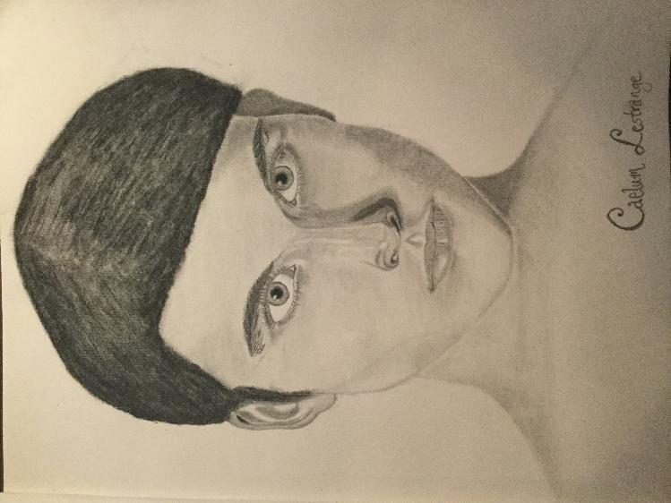

Chapter 1

Home, Sweet Home
Rigel had once read that a strong physical foundation was the key to any truly impressive work of magical architecture. Whoever wrote that, she reflected, had never been to the Weasleys’ house.
“Don’t worry, it’s more structurally sound than it looks,” Ron assured her as they walked up the front walk.
“It’d have to be,” Rigel said vaguely, still staring. The Burrow looked as if someone had taken a charming country home, stacked another charming country home on top of it, attached half a semi-charming shed to the left side of that, and then added windows the way a child adds sprinkles to a cupcake.
“It’s not much,” Ron said, rubbing his neck uncomfortably.
“It’s amazing,” Rigel said honestly, “Do you know how much power went into the original keystones to make it stable?”
Ron blinked at her, then smiled wryly, “No, but I bet Percy does.”
Rigel glanced amusedly at her redheaded… friend? Close acquaintance? Something like that. She wasn’t sure why Ron was the one to collect her from Sirius’ house, actually, since it was the Twins who extended the invitation, but she wouldn’t complain. She liked Ron well enough, when he and Draco weren’t scowling at one another.
“Well, here it is,” Ron said grandly, opening the front door wide, “Home sweet—”
“Puppy!”
“You came!”
Two tornados swept Rigel around in a series of dizzying circles before she could get a proper look at the inside of the Burrow, and she took a moment to uncross her eyes before she greeted their exuberant grins with studied consideration.
“Let me guess,” she said, tilting her head slightly to one side, “Dread and Scourge?”
Fred puffed up importantly and said, “That’s Mr. Scourge to you.”
George aimed a mock punch at Fred’s arm, and Fred ducked dramatically.
“Dread?” George chuckled, “More like Fled.”
“You’re one to talk, Porridge,” Fred sniffed.
Ron snorted, “Not sure that one quite works.”
“Oh? How about this one, Prawn?”
“More like Yawn.”
“Or maybe Bon-bon?”
“And that’s my cue to leave,” Ron rolled his eyes, “Thank Fate every day you don’t have any siblings, Rigel. I’ll go tell Mum you’re here.”
“Don’t listen to him, Pup,” George said good-naturedly, “Younger siblings are a blast.”
“Are you quite done accosting our guest?” Percy came striding into the room, straightening his horn-rimmed glasses as he looked Rigel up and down, “You look well, Rigel.”
“Older ones on the other hand…” Fred muttered.
“What was that?” Percy turned his sharp gaze on his brother.
Fred straightened and pasted on a smile that fooled no one, “Just giving Rigel a hand, I said.”
“We were about to conduct a tour, in fact,” George said, “We thought we’d start with your closet, Percy, specifically the collection of pen nibs you keep in a box up there, so if you don’t mind—”
“This must be young Rigel Black, then.”
A middle-aged woman with fiery hair and a welcoming expression bustled into the room. She spoke briskly, eyed the acid burns on Rigel’s boots sharply, and smiled warmly. Rigel didn’t think she’d ever been looked at so affectionately by someone she’d just met.
“Pleased to meet you, Mrs. Weasley,” Rigel said, bowing to the same degree she would to Mrs. Malfoy, “My father has only wonderful things to say about you and your family. He sends his regards, and please, call me Rigel.”
Mrs. Weasley chuckled, “So polite!” She turned to narrow her eyes at her three middle children, “Why can’t you ever be that polite?”
“I am that polite, Mother,” Percy said stiffly.
“Being polite is not the same as having a stick up your—”
“George!”
“I’m Fred, Mum,” George rolled his eyes.
Mrs. Weasley sighed, “Sure you are, Dear.”
Rigel was taken aback by their family dynamic. It was almost prickly, and yet… no one seemed to really mean any of the things they were saying, as if their dialogue was all part of some inside, family joke. It was… endearing, in an overwhelming kind of a way.
“Well, it is very lovely to meet you, Rigel,” Mrs. Weasley said, “Come into the kitchen, won’t you? I’ll put a kettle on. I must say, I didn’t imagine you’d be so thin…”
The Weasley matriarch bustled away into the next room, leaving Rigel to smother a wince and follow behind her.
“Don’t take it personally,” Fred whispered.
“She thinks Hagrid is too skinny,” George added.
“Though you do seem to have grown in the last few weeks,” Percy said, eyeing her critically.
“My Aunt Lily’s cooking,” Rigel said, affecting a shrug. Of course they would notice—even though the latest dose of Modified Polyjuice hadn’t changed her appearance too much, it was still an abrupt transformation. Most noticeably, the potion had increased her height by an inch and a half, giving her a slightly gangly look that she had learnt to ignore.
They trooped into the kitchen, which held the biggest kitchen table she’d ever seen, discounting Grimmauld Place’s formal dining table. The Weasley kitchen could probably seat twelve, at least. At the moment, the only one sitting at it was Ginny. Even though it had only been two and a half weeks since the end of school, Ginny already looked much better than she had the last time Rigel saw her. Not softer, exactly, but… calmer. More at peace, perhaps. Rigel hoped the Occlumency lessons would ground her even more, when they began.
“Hello, Ginny,” Rigel said politely, “Good to see you.”
“Hello, Rigel,” Ginny said, “Couldn’t get out of coming after all?”
“Ginny!” Mrs. Weasley scowled, “Don’t be rude.”
“It’s quite all right, Mrs. Weasley,” Rigel said, smiling slightly, “I like Ginny rude.”
Ron made a choking noise that he quickly turned into a cough, and the Twins (whose title she always capitalized in her head for some reason) both guffawed.
“Well,” Mrs. Weasley didn’t seem to know what to say to that, so she set about making tea.
They all took seats around the table, and Rigel slipped into one next to Percy, still curious about the magic holding up the Burrow.
“Percy, do you know anything about the structural wards for this house?”
Percy raised an eyebrow before saying slowly, “A bit, why?”
“In potions, magic acts as the ultimate stabilizer, sometimes even compensating for otherwise unstable combinations, so I wondered if it might not be the same for magical structures,” Rigel began.
Fred cut her off with an extremely loud throat clearing, and George contributed by putting a hand over Rigel’s mouth. Rigel stopped talking, and raised her eyebrows at the two with calm patience.
“No shop talk,” George said helpfully, “This is a social visit.”
When he moved his hand away, Rigel asked, “Is talking not considered social here?”
“Talking about academics certainly isn’t,” Fred said firmly.
“It’s not academics, just a bit of magical theory,” Rigel pointed out, “And I’m pretty sure asking about the host’s family home is the very basics of social small talk.”
“About the host family’s wards?” George drawled.
Rigel mentally awarded the point to George. It wasn’t really good form to ask about another wizard’s wards, as a matter of security.
Ron smirked, “He’s got you there. But there’s nothing wrong if it’s just theory. How many times have you two regaled us with the theory behind your latest pranking invention at the table? I want to hear about the wards, too.”
“Dad would know better,” Percy said, “But I believe the Weasley who built this house had the help of a Light Lady. She supposedly instilled a great deal of power into one of the key—”
Percy was interrupted by the fireplace roaring to life. The sickly green colour of the flames told them someone was coming through the floo, and the way the Weasleys all frowned or cocked their heads curiously told Rigel that whoever it was, they weren’t expected.
Yet another redhead ducked into the kitchen, de-ashing himself with a careless shake.
“Bill!”
The newcomer waved a hand ironically in response to the cry that went up around the kitchen, “Yes, it’s me. Did I surprise you?”
“What on Merlin’s green earth are you doing here?” Mrs. Weasley planted her hands on her hips, “You said you wouldn’t be home again till July.”
Bill raised an eyebrow, “Not happy to see me, Mum?”
Mrs. Weasley rolled her eyes, “Oh, come here, then.”
Bill grinned and strode over to kiss his mother on the cheek. Rigel didn’t think she’d ever seen someone look cool while hugging their mum, but somehow Bill Weasley pulled it off. His hair was long, which made his mother cluck despairingly as she bustled about getting cups for tea. He was tall, lean, and when he turned his head to hide his grin from Mrs. Weasley’s disapproving eyes, the silver fang dangling from his ear flashed as it caught the light.
“Who’s this then?” the older boy—man, really—asked as he sat down. His eyes flicked over Rigel’s face, but no recognition lit his mildly curious expression.
“This is Rigel Black,” Ron said hastily, apparently taking responsibility for Rigel’s place there, “He’s in my class at Hogwarts.”
Bill mulled that over for a moment before answering, “Sirius Black’s son, then.” It didn’t sound like a question, but Rigel nodded in any case. “I hear you saved my little sister’s life a few weeks ago, and that of my brother’s a year before that.”
Rigel blinked slowly to give herself time to formulate a response, “Ginny and I saved one another, and Ron’s life was never in any mortal danger from the sickness. It’s a pleasure to meet you, however.”
Bill gave a slow grin, “Modest, are you? That’s good.”
Rigel had the absurd impulse to say something inane like “Thank you,” but she resisted.
“Why are you back early, Bill?” Percy asked curiously, “Aren’t you scheduled to be on a dig right now?”
“Bill’s a curse breaker for Gringotts,” George informed Rigel quietly, “He’s been working in Egypt lately, on a series of old tombs they just uncovered.”
“You’ll hear about it soon enough in the Prophet,” Bill said, shrugging, “But the dig was put on hold. One of the tombs we were set to excavate was broken into last night.”
“What?”
“Merlin!”
“Was anyone hurt?”
“Everyone’s fine,” Bill assured his family, “They’re not even sure it was a break-in. The air-seal over the site was broken, but no opening big enough for someone to get in or out of was created. Also, preliminary investigation seems to indicate that the treasures we expected to find are still in there. If it was broken into, they didn’t want gold.”
“Does that mean you’re fired?” Ginny asked drolly.
Bill reached over to tug on her hair admonishingly, “Hush, you. No one fires Bill Weasley. I just get a few days off while they look for clues. Once that’s done, we can get on with the actual tomb-plundering.”
“When you said you wanted to be a pirate when you grew up, your father and I always laughed,” Mrs. Weasley sighed, “I suppose the joke is on us.”
“It could be worse,” Bill shrugged casually, “Charlie wanted to be Vampire when he was little.”
Mrs. Weasley tittered with an embarrassed glance at Rigel, “That was just a phase.”
“He used to only come out of his room at night,” Percy sighed, “And I remember him refusing to eat anything that wasn’t red-coloured.”
“That’s right,” Bill chuckled, “He used to mush all of his food together until it was pulverized, then eat with his hands. It was disgusting.”
“He was eight,” Mrs. Weasley huffed, “And he was over it in a few months.”
“What does he do now?” Rigel asked curiously.
“He’s a dragon-tamer,” Ron said casually.
Rigel’s eyebrows rose. A curse-breaker, a dragon-tamer—the Weasleys certainly were a formidable bunch.
“We like a bit of danger,” George said, as if he could guess her thoughts.
“Gryffindors,” Fred shrugged, grinning.
“That’s no excuse,” Percy sniffed.
“Like you aren’t going to be the most formidable lawyer that ever lived, Perce,” Ginny scoffed, “I bet you set a record for most criminals who plead guilty and beg for mercy at the mere mention of you.”
“I’m not going to be a trial lawyer,” Percy protested, though his ears were pink at the praise.
“You say that now,” Ginny smirked, “But we all know you can’t resist the limelight for long.”
Percy scowled, but Rigel could tell it was good-natured. They knew one another so well, this family. They knew each other’s strengths and weaknesses, and they talked about them openly for all to hear. It was sort of amazing, to Rigel at least. Her family was warm, and open on the surface… but they all had things they didn’t talk about, too. Diana, Lily’s muggle relatives, their friend Pettigrew from school… the list went deep. Even Archie and she had secrets, now.
Then again, Rigel scolded herself, the Weasleys probably had secrets too—everyone did, didn’t they? If they came to her house, it would probably seem like the Blacks and Potters were themselves an ideal family, at least at first.
Still, the idea of the Weasley family was nice, she thought.
*
She didn’t stay at the Weasleys’ home more than a few hours. It was good to catch up with her friends from school, but she didn’t have time to spend all evening away from her work.
Her internship started next week. It would last all of July and August, ending just before she had to go back to Hogwarts. As she understood it, most of the internship was research-oriented, but she wanted to be as prepared as she could be for any practical challenges she would face.
As such, she spent as many hours a day as she could afford in her lab. When she returned from the Weasleys’ house, she stopped only to change into her work robes before heading back into the basement. She was almost through with the latest batch of potions Krait had commissioned from her. She continued to conduct her business with Krait by owl mail, though she told herself she wasn’t avoiding Diagon Alley. Or Leo.
If Krait noticed how much quicker she responded to his orders, not having to wait for the mail to go through Archie in America first anymore, he probably attributed it to her having more free time now that school was out. If he was offended she hadn’t been in to see him personally since she got back, he didn’t say so. Leo hadn’t ever answered her letter, hadn’t given an explanation as to why he’d deliberately set her up for exposure at AIM. If she traipsed through Diagon Alley every day, sooner or later she’d run into him. She had no interest in spending time with people she couldn’t trust, however.
As she was making a supply list for the stores she’d depleted since Christmas, her father poked his head into the lab and called her name.
“Harry? You down here?”
“Just finishing up for the night, Dad,” Harry said absently, deciding that it would be safer to order two bushels of winterfig twigs, just in case.”
“How can you stand it down here for so long?” James ruffled up the back of his hair absently as he looked around the well-lit lab, “Don’t you want a window, or something?”
“I have plenty of light, Dad,” Harry said patiently, “I don’t need a fake window with its accompanying, detrimental distractions.”
“If you say so, kiddo,” James said, obviously too tired to really care—not that Harry blamed him; his life was tiring, after all, “Though I don’t know if there’s anything detrimental about a little sunshine.” The look on his face was affable bewilderment. It was a look Harry had always associated with her dad, as he wore it often around her. She knew she confused him, but she also knew he didn’t hold it against her, so their relationship was fine, no matter what others might think.
“You know Sirius would just charm it to rain frogs all day,” Harry said, deliberately lightening the mood, “And that would be distracting.”
“Yeah,” James chuckled, “You’d be lucky if it was just frogs… still…” his face dissolved into puzzled concern once more, “You spend an awfully long time down here every day. Archie went over to see one of his friends from school today—the Weasley boy, you know. You could go visit Hermione, or another friend, if you wanted.”
Harry smiled reassuringly, “I’m just preparing for my internship, Dad. You know how important it is to me. Besides, I did go out today—I went book shopping, remember?”
At least, that’s what Archie, who was pretending to be Harry that afternoon, had done.
“Oh,” James said, “Books, right. Potions books, I suppose?”
“Healers books, actually.”
“You’re sticking with that, then?” James sounded approving.
“As long as I can,” Harry said honestly. At her father’s conflicted look, she added, “For me, not just for Archie.”
James smiled, “You’re a good one, Harry. Your mother and I are so proud of you.”
“Thanks, Dad,” Harry said. She didn't know exactly what his words were supposed to mean, but she took them for what they were : unconditional support, if not understanding.
“Oh, a letter came in the mail today—from that correspondence school of yours,” James added before he left, “Are you sure you have time for more classes this summer? You’ve got that internship as well.”
“I didn’t sign up for very many,” Harry said quickly, “I shouldn’t have trouble doing both.”
“If you’re sure,” James said easily, having long ago learnt not to argue with Harry about what she could and couldn’t do. He almost always ended up eating his words. “Dinner will be at Grimmauld tonight. Wash up first, okay?”
“Of course, Dad,” Harry said, already turning back to her supply list, “See you in a bit.”
*
Dinner wasn’t quite the same cheerful, noisy affair it had been the last time they were all home. It was still plenty noisy, and it wasn’t that anyone was unhappy, but the meal was tempered by a kind of strained weariness that perhaps only parents of newborn babies could understand.
Addy was a joy to all of them, but Harry could see the toll that having a baby in the family again was taking on her parents.
Sirius kept up conversation with Remus and Archie, while Lily and James only participated when called upon, otherwise conserving their energy for eating. Lily’s face, though full of love, was thinner, her eyelids just a little slower to blink. Harry knew, just based on how often she herself awoke to the sound of a baby’s cries in the dead of night, that Lily wasn’t getting much sleep. James laughed readily at Sirius’ jokes, but half a beat slower than was natural.
Harry was in charge of feeding Addy that night—they all took it in turns. On the surface it seemed rather elementary : put bottle in baby’s mouth, wait for baby to drink it all, then stop. Unfortunately, such a process depended entirely upon baby’s cooperation, and didn’t take into account the fact that Addy hated Harry.
As in, actually couldn’t stand to be around Harry at all.
When Harry held her, she cried. When Harry leaned in to kiss her forehead, she cried. Whether Harry offered toys, milk, cooing noises, or diaper changes didn’t matter—Addy still cried. After the first week, Harry had decided the best course of action was to stop antagonizing the obviously distressed infant. She still looked on fondly as Addy interacted with the other members of their family—from a distance—but the only times she directly interacted with her sister herself were feeding times.
Harry had quickly discovered it worked best if she laid Addy in a little nest of baby blankets, propped at half-mast, and arranged for the bottle to rest on another, smaller nest of blankets on Addy’s little chest, also propped at an angle against her mouth. This way, all she had to do was watch as Addy drank, make sure she stopped for air and burps often enough, and take away the bottle when Addy was done.
All the others except Remus cradled the baby in their arms as they fed her. Harry’s only consolation was that if Addy didn’t like Remus much either, it at least meant she wasn’t a great judge of character, and her dislike of Harry didn’t mean Harry was inherently dislikable… probably.
Addy finally settled into her dinner—after Harry stopped touching her—and Harry kept an eye on her while she mechanically ate her own meal.
It went on uninterrupted for a few minutes, until Remus suddenly blurted, “Harry, that’s meat!”
Harry looked down at her plate. There was indeed a piece of chicken on her plate. She must have absent-mindedly taken one from the center pile.
“I… eat meat now,” she said, shrugging, “I’m going into adolescence—you’ve seen how much I’ve grown the past five months. It isn’t healthy to maintain a vegetarian diet when I can’t devote the time or energy to really pay attention to getting the right nutrition anymore. Sorry I didn’t tell you,” she added as an afterthought.
“Sweet!” Archie said, cheerfully scraping the rest of his chicken onto Harry’s plate, “Cause I’m full.”
Harry looked down at the half-eaten chicken on her plate, “Thanks?” She saw Addy’s bottle starts slipping from the corner of her eye, so she reached out to straighten it, ignoring the little whimper her baby sister let out when Harry’s finger brushed her cheek accidentally.
Archie got up to rummage around the kitchen, “Where’s the Bundt cake Dad brought home yesterday?”
“Do you actually know what the word ‘full’ means, or is that just something you say when you want to leave the table?” Remus asked.
“I’m pretty sure the meaning of full is ‘I’m tired of eating this and ready for something else,’” Archie called back.
The conversation moved on, and Harry mentally thanked Archie for the distraction. She’d got used to eating meat in the kitchens with Binny, which was probably the one place, apart from her lab, where she felt relaxed while at Hogwarts. Perhaps she had associated the relaxed feeling of eating at home with “a safe place to eat meat” in her head, but it was still an unforgivable lapse in concentration.
On the up side, their parents (and especially hers) were noticeably less attentive to Harry and Archie this summer, and it didn’t take a genius to work out that Addy simply needed their attention more. The infant’s needs also drained the adults of their excess energy, made them less attentive and more easily distracted. On the down side, this meant Harry was becoming less attentive in turn, because any slip-ups she made were largely overlooked, but soon she would be back dealing with people who were not strung-out from dealing with an infant all day on top of demanding careers, and those people would notice if she slipped up.
After dinner, James helped Remus clean up the kitchen, Archie went up to his room to “finish a letter to Draco,” Lily took Addy back to Godric’s Hollow to take a bath, and Harry went back to her lab. She was almost done with Flint’s summer assignments, but she wanted to draft a letter to Blaise for his opinion on binary rune circles before she started outlining the Runes essay.
She wanted nothing to distract her from the internship, which loomed closer in the back of her mind each day. Sometimes, Harry felt like she was being stalked by a beast she knew full well was coming, but couldn’t turn around and face. But no, that was silly. She was ready for this internship. She was.
*
That weekend she received a letter from Krait. He’d arranged a meeting with Horace Burke, and apparently (and a bit annoyingly) assured him she would be there to discuss a proposition for expanding his order.
On Sunday morning before most of the shops along Diagon Alley had even opened, Harry slipped out of the Floo while Lily was busy giving Addy her morning bottle.
She was no longer that wide-eyed child who’d come traipsing through Knockturn Alley looking for a job last summer. She kept sharp eyes on passersby, and the hand in her robe pocket rested not on a wand—for she was banned from magic over the summer—but on a small platinum knife designed for only the most meticulous of ingredient preparation.
She relaxed only when she stepped into the familiar Serpent’s Storeroom. After glancing around, she swiftly un-relaxed when she realised that Krait, and Horace Burke as well, were nowhere to be seen. Instead, she shared the shop with one Lionel Hurst, King of The Lower Alleys, and current number one on Harry’s list of people she didn’t want to see.
He was somehow even taller than he’d been over Christmas, his skin tanned and his clothes casual. His white teeth flashed in a smile when she walked in, but it swiftly faded when she didn’t smile back.
She rested her back against the shop door and lifted her chin challengingly, “After your unprovoked sabotage at AIM, you’ve descended to merely wasting my time with fake meetings, Leo?”
“Sabotage is a little dramatic, lass,” Leo protested, not moving from where he was leaned indolently against a shelf across from the door.
“What do they call it around here when one person tries to ruin the plans of another person? Do they call it friendship, Leo?”
“Not in as many words,” Leo muttered, lifting one shoulder uncomfortably, “Look, Harry, will you let me explain?”
“I asked for an explanation several months ago. You never replied,” Harry said flatly.
“I felt I needed to explain in person,” Leo said lightly, “And I didn’t want to risk a letter, since it might be construed as yet another threat to your all-important secrets.”
“Yes, my important secrets,” Harry said slowly, “The ones you knew about, the ones I told you were important, the ones you betrayed when you sent your man to my school armed with the power of my undoing.”
“When truth is a threat, you have to admit something’s wrong—”
“Says the King of the Shadow World?” Harry snapped incredulously, “The only thing wrong is—is me, obviously, for misplacing my trust in you.”
Leo stalked across the room so fast that Harry didn’t have time to flinch. He was right up in her face, looming over her, and glaring as he spoke in a low, harsh bite, “Now don’t start playing the trust card with me, lass. Don’t act like you gave me your trust and I betrayed it. You didn’t tell me your secrets. I pried them out of you—”
“By sneaking around behind my back—”
“By looking after you the way you clearly can’t be trusted to look after yourself—”
“What would you know of trust?” Harry scowled, “You, who sends Marek to my school to mess up everything? Did you even give it a second thought? Or did you just shrug and decide that only the things you decide are important are worth caring about?”
“Harry…”
“No!” Harry could feel blood flowing to her face, as it did on the rare occasion she ever got really upset, but she couldn’t help herself. Leo had no idea how much damage he could have caused, but she had to make him understand that she wasn’t playing. “You have to listen to me, Leo! Don’t look at me and see a little girl who doesn’t know any better, don’t wait for me to finish and then ignore what I said, listen, okay?”
Leo took a breath so deep it pressed his chest up against her own for a moment, then he turned his head and blew it out, stepped back, and crossed his arms expectantly, “Okay. I’m listening.”
Harry thought carefully about what she wanted to say. She took a moment to swing her point of view in Leo’s direction, to think about why he might have acted the way he did, what he might think about her, and how to address the real problems between them. If she wanted him to listen, she had to let him see she understood his side.
“I think some of the things you believe about me are wrong,” she began. “When we met, you thought I was a boy, and when I finally corrected you about it, I think you may have come to the conclusion that I hide things casually, without good reason, and without thinking the consequences through, is that right?”
Leo tilted his head consideringly, then nodded slowly, “In a way.”
Harry firmed her gaze, “That was a very poor example of the secrets I carry and the deceptions I carry out. I’m not trying to alarm you, Leo, but you need to understand that whatever you think of my life, it hangs in a precarious place right now. I’ve taken as many precautions as I can think of, fortified my position a hundred times over, but I know it isn’t enough. You, however, don’t know how dangerous a position you put me in when you sent Marek to AIM looking for me.” She held up a hand to forestall Leo’s objections, “I know it isn’t your fault you don’t know, because I can’t tell you, but you did know that I was keeping secrets, you did know that they were complicated, and you still sent people to interfere. Do you understand why I’m angry?”
Leo shot her an unimpressed glance, “If you’re done patronizing me, yes, I know why you’re mad. I respect that you don’t appreciate my interference, but I’m not the one who doesn’t understand how dangerous your way of life is—I’m not talking about whatever perceived danger you feel will befall you if people know you’re a girl, though I can guess it has something to do with the discrimination you feel exists against women in the potions community. I’m talking about the damage it will do to your psyche to put yourself under constant pressure like that. Secrets aren’t good for the soul, Harry. They’re going to consume your entire life, because that’s what lies do—I’m not telling you this as some kind of White Wizard, Harry. I know this because I’ve been you. I understand living a complete lie, segmenting your life into different compartments with different identities that you never let overlap. I don’t want that life for you, Harry. I’m not trying to ruin your life. I’m trying to save it, before you get in too deep. You’re twelve. If people find out what you’re hiding now, it won’t be that big of a deal. You can move past it, your friends at school will forgive you, and things will be okay. If you keep this up until you’re seventeen, though… Harry, it’s not a good idea. Surely you can see that?”
Harry felt her anger soften slightly. “Leo… thank you for looking out for me.”
“But?” he said wryly.
“But you don’t have all the facts,” Harry said sadly, “I do see the sense in your advice, but I’m telling you… it’s not that simple. It’s already too late to go back and simply confess everything. What I’ve done… can’t be undone. Please say you won’t ever try and meddle in my life like that again.”
Leo’s face was mulishly unwilling.
Harry tried a different track, “Not just for me, Leo, but for your own sake. You really don’t want to get mixed up in—”
“Don’t.”
Leo took another long breath, and Harry waited for him to find his words.
“Don’t tell me what I do or don’t want to do for you, Harry,” Leo said softly, “I’ve said it before—I’m your friend. I’m not gonna keep away to save my own skin. If you’re really sure you can’t get out of whatever mess you’re in… then I won’t try to pull you out myself ever again. But please… please be careful. I know I said that before, but I didn’t really believe that you could be in that much trouble. You’re a Potter, practically royalty, and still a kid, how could you be in any real danger? That was stupid of me, I guess. I only have to remember myself at your age…” he grimaced, “Actually, I can’t believe I didn’t think of it like that before now. Do you need papers to flee the country?”
Harry let a laugh escape her, and stepped forward to hug Leo briefly, “You’re pretty foolish for a king, Leo.”
“Well, you’re pretty shady for an Auror’s daughter, lass,” Leo muttered into her hair.
Harry stepped back and shrugged, “I guess if anyone knows about not following in our parents’ footsteps, it’s us.”
Harry turned to go, but Leo laughed, saying, “Oh, no you don’t. I have something for you—an apology.”
Harry raised her eyebrows, “Okay, I’m listening.”
Leo laughed again, “Like I’m going to say it? No, you don’t deserve the satisfaction.”
“How do you figure that?” Harry asked dryly.
“Well if you hadn’t been such an untrusting little—”
“Not seeing the apology part yet.”
“Ahem,” Leo coughed dramatically, “Follow me.”
He took her out into the alleys, past the Dancing Phoenix… and up Dogwood Lane.
“This feels familiar,” she commented as they stopped before number eight.
“Do you have the key?” Leo asked, smirking.
Harry opened her mouth to retort, then realised that no, actually, she didn’t. “I usually floo in,” she mumbled.
“Sure you do,” Leo said, “Come on, then.”
He led her around to the backstreet, and took out his wand. Harry tensed automatically, but Leo held up his hands calmly, “I’m going to levitate you up to your window—which you don’t keep locked—”
“I know that,” Harry snapped.
Leo just gave her this look, and continued, “Don’t wiggle too much or it’ll compromise the spell.”
Harry eyed his wand dubiously, “I won’t be able to levitate you up after, because I’m underage… and so are you, aren’t you?”
“Turned seventeen in April,” he grinned, “And I’m going to climb up after you.”
“Why can’t we both climb?” Harry bristled, “Because I’m a girl?”
“Because you don’t know how to scale a building,” Leo said.
“So teach me,” Harry suggested.
“Right now?” Leo rolled his eyes, “What will the neighbours think? I’ll teach you later if you really want to know how, just hold still for a second, will you?”
Before Harry could protest, he swished his wand at her torso. Her magic, a bit on edge after the Chamber incident, flashed into a shield and intercepted the levitation spell in an instant.
Leo raised an eyebrow, “Really? Now who’s violating the Minister’s law?”
Harry sighed, not bothering to point out that not using her wand meant not being Traced, and asked her magic to lay low, allowing Leo to cast the levitation charm and hoist her gently into the air. As she floated upwards, she couldn’t help but notice that Leo’s magic felt restless in a way most grown wizards’ magic didn’t. Was it because he was just now leaving adolescence?
She latched onto the windowsill and hefted the pane upwards as Leo held her steady in the air. When she had pulled herself halfway through, she felt the levitation spell dissipate, and not long after she had scurried inside, Leo followed lightly into the room.
When she looked around, the first thing she noticed was how full the room was. She stared, blinked, turned in a circle, blinked, walked into the kitchen, stared some more, and took a deep, calming breath. Every room was filled with appropriate furniture. The kitchen had a table, two chairs, a scattering of dishes, even. The living room had a settee, a coffee table, a bookcase—and there were books in it! Potions books, classics and newer editions, too. She ran her fingers along the spines, and turned to run her eyes wonderingly over a painting of Hyde Park that hung over the fireplace.
She suspected that if she went into the little bedroom, she’d find a bed, maybe even a chest of drawers. She looked at Leo, who was watching her with a twinkling grin, and swallowed hard.
She cleared her throat, “I was… ah, I’ve been wondering for a while where all this came from. I should have known it was you who—”
Leo shook his head and said, “Don’t, lass, not with me.”
Harry’s hands trembled helplessly, but Leo caught them with his own and smiled kindly down at her, “I know you’ve got this place for a reason, and it looks less suspicious with actual furnishings, doesn’t it? And I come here every now and then, make a bit of noise for the neighbours to hear… well, even if you only meant to use it as an escape hole, now it’s ready for you.”
Harry frowned, “That’s not what—”
“Hush,” Leo said, with no small amount of amusement, “I don’t care what you want it for—I’ll tell any tale you like, or none at all. I know I messed up at AIM. I won’t send one of my men there again. I did this so you’d know I’m trying to help you, Harry. I’m on your side.”
Somehow, even though Harry had understood Leo’s point as soon as she’d seen the furnishings, hearing those words…
He was on her side. How many people could truly say that they were on Harry Potter’s side, and have even an inkling of the trouble they were getting themselves into by declaring it? Archie, of course, and now Leo.
Harry stepped away from Leo and smiled with as much affection as she dared—it went all the way up to her eyes, and stayed there for a moment, vulnerable and true, before she let it fall again, “Thank you, Leo. I’m sorry I snapped at you.”
“You’re welcome any time, lass,” Leo smiled back, “To the snapping, too, in fact. I suspect you don’t let yourself shout as often as you deserve to.”
“I’ll leave most of the yelling to your mother,” Harry grinned, “But thanks anyway.”
She flooed back to the Leaky Cauldron before flooing to Godric’s Hollow—you never knew when floo records could be traced—and when her mother asked distractedly where she’d been all morning, Harry told the truth.
“I’ve been visiting a friend.”
*
The Potions Guild.
Harry knew plenty about it, but she had never dreamt of setting foot inside—not until she was about twenty, at least.
The building itself was intimidating, redone in the sixteenth century, and following the imposing Tudor style, all heavy arches, tall doorways, and steep roofing. It’s wasn’t beautiful, but it was noticeable, in the most tasteful of ways, of course. It sat in between the Ward Smith Guild and the Metallurgist Guild, on what most people called Craftsman Alley, which ran parallel to Diagon Alley, and was reached via an unnamed backstreet running next to an antique bookshop near Mr. Tate’s shop.
Harry had known it would probably take the same amount of time to get to as the Serpent’s Storeroom did, and she had still shown up fifteen minutes early. She hesitated outside the tall, narrow wooden doors. She could wait outside for fifteen minutes… and then just go home like the coward she was impersonating. She sighed, opened the doors, and stepped firmly into the rest of her life, closing the heavy oak decidedly behind her.
The front desk stood directly before her, so she approached it determinately.
A young man of about twenty sat at the desk, and as she drew nearer she could hear him muttering to himself as he shifted manuscripts from one place on the desk to another, seemingly at random.
She cleared her throat, “Excuse me, could you tell me where—”
“Yes?” the young man looked up with unfocused eyes, “What’s that?”
“I’m here for the Guild internship,” she said, “Where should I—”
“Down that hallway,” he gestured to an archway to his left, “Down the stairs at the end, left until you see a sign for Lab 17. Master Rutherage will be down to meet you upon the hour.”
“Thank you,” Harry said, but the young man appeared too busy to notice.
She followed his directions, hiking up her new potions satchel as she went. She’d needed something unrecognizable as Rigel Black’s—just in case—so she splurged on a potioneer-made bag with air-lock spells and manual pressure-adjustors built into the pockets. After all the brewing she was doing for Krait, she could certainly afford it, even after she set aside a good portion of her earnings for rent on number eight. Now as she approached the door to Lab 17, she had a moment of illogical fear that it would seem silly, her walking in with her new satchel, like a little girl with a new lunchbox on her first day of school.
She straightened her shoulders impatiently. She took pride in her work, which included owning top-notch equipment as well. She was a damn good brewer and had nothing to be ashamed of. She opened the door to Lab 17 quietly and calmly, as though it was no big deal. Just another door that needed opening. She only mentally cringed a little bit at how ridiculous her inner monologue was becoming.
Lab 17 was fairly small. Bigger than her personal lab, of course, but much smaller than the student labs at Hogwarts. She clamped tight on that thought—Harry Potter has no idea how big the labs at Hogwarts are—and distracted her mind by surveying the room, and the people within it.
The two other internees were already present. They were both boys, and both turned to face her at the sound of the door closing behind her. One was dark haired and dark eyed. He was relatively short for a boy who looked around nineteen, and his skin-tone suggested a southern-European ancestry. Maybe. Harry wasn’t actually that great with guessing heritages in people. That boy looked at her curiously for a moment, then went back to the periodical he was reading—the most recent Potions Quarterly, she noted. She also wondered why he hadn’t read it in May when it was released.
The other boy scowled at her from where he lounged with casual grace at the desk he’d chosen. When Harry recognized him, it took a direct assertion of will not to scowl back.
It was Caelum Lestrange.
She turned all the dislike that surfaced at the sight of his perfectly pretentious face into icy coolness, and walked across the room to sit at a desk on the other side of the European-looking boy—better to keep him between her and Lestrange, in case her magic got any funny ideas about what to do with the enmity he stirred in her.
“What are you doing here?” Lestrange asked incredulously, “This program is for talented brewers, not amateur children.”
Harry turned her head to look past the other boy to where Lestrange was openly sneering at her. You don’t know him, she reminded the part of herself pretending to be Harry Potter (ignoring for the moment how absurd it was that she had a part of herself pretending to be herself). “Have we met?” she asked quietly.
Lestrange’s face went even paler with anger, and Harry had to admit she knew why. It was the highest of insults among High Society to forget a face—even higher if you were pretending to forget, as Lestrange no doubt suspected she was.
“Very amusing, Black,” Lestrange spat, “Too good to remember your betters?”
Harry let her eyes widen in understanding, “Oh—you’ve met my cousin, then, Rigel Black? Don’t worry, this sort of thing happens a lot. We’re very similar in appearance.”
Lestrange was taken aback only a moment before he regrouped, “Is that so? How convenient. Who exactly are you supposed to be, then? Regulus Black’s bastard—”
“Careful,” Harry said mildly, though with steel in her gaze, “Regulus Black doesn’t take kindly to slights against the Black Family name. I’m not related to Rigel by blood, however. I should have said honorary cousin. My name is Harry, Harry Potter.”
If anything, Lestrange’s incredulity only grew, “The Potter Heiress?” He stared at her for a beat, sweeping his eyes down her body, then snorted, “You’ve got to be the ugliest girl I’ve ever seen.”
Harry’s eyebrows snapped together sharply, but she took a calming breath. The fact that Lestrange was here before taking his NEWTs meant he had some skill as a brewer. If he passed his Mastery, she would cross paths with him occasionally. Better to learn to neutralize his vitriol now. “Perhaps I am,” she said evenly, “But I think it’s awfully rude to say so.”
Lestrange only lounged back at his desk unconcernedly, “Who cares what you think? A brat like you won’t last a week in this program. They’ll send you home crying like the little girl you are.”
Harry bit down sharply on her tongue to stop it lashing out in retaliation. He’s not worth it, she told herself, He’s not what you’re here for. Ignore him, and be patient. His opinion means dirt.
She turned her attention to the boy sitting next to her, who had yet to say a word, “I’m Harry,” she said, “What’s your name?”
“Renaldo,” the boy said shortly, not even glancing at her as his eyes flicked lazily over the words of the article he skimmed, “Please don’t talk to me, girl.”
Harry turned back to her own desk slowly, blank-faced. She ignored the part of her that winced at Renaldo’s dismissal, and crushed the part of her that growled at Lestrange’s derisive snort of laughter at her expense. She took a deep breath, counted to ten in French, and retreated behind a calm outer indifference. So she wasn’t destined to make friends here—so what? Great potioneers didn’t need friends, only test subjects. Look at Master Snape—he didn’t have many friends, and he was the best. She could be like that too; if her peers wouldn’t give her the time of day, she would wear a watch.
A moment later, a great bear of a man with thick, wavy brown hair and sharp green eyes stepped into the small lab and surveyed them all cheerfully, “All here then? Good.” The door slammed shut behind him and locked with an audible click at a flick of the man’s wand, “If anyone is late, they will lose that day of instruction—so don’t be. Welcome to the Guild’s summer internship program. If you want to make anything of yourselves in the potions community, I suggest you start taking notes—NOW!”
Harry smoothly took out a sheaf of loose parchment and readied her quill. Lestrange and his pettiness retreated to the unimportant recesses of her mind. Finally, she was beginning her career as a potioneer. She was sitting in the Guild, learning from one of the senior Masters, as Harry Potter—not as Rigel Black or anyone else. It didn’t matter if her classmates didn’t like her. Harry was here, and no one could ever dispute that, halfblood girl or not.

Table of contents
- The Pureblood Pretense by Violet Matter
- The Serpentine Subterfuge by Violet Matter
- The Ambiguous Artifice by Violet Matter
-
The Futile Façade by murkybluematter
- Cover
- Title Page
- Summary
- 1. Healing
- 2. Correspondence
- 3a. Seifer's Solution
- 3b. The Free Dueling Tournament
- 4. The Quidditch World Cup
- 5. Acknowledgement
- 6. Allegiances
- 7. Negotiations
- 8a. Weighing of the Wands
- 8b. The Forbidden Forest
- 9. Blood Wards
- 10a. Freebrewing
- 10b. The Rod of Zuriel
- 11. Champion of Charity: Rigel Black Gives Back
- 12. Ascending
- 13. The Final Task
- Who is RBC?
- Epilogue